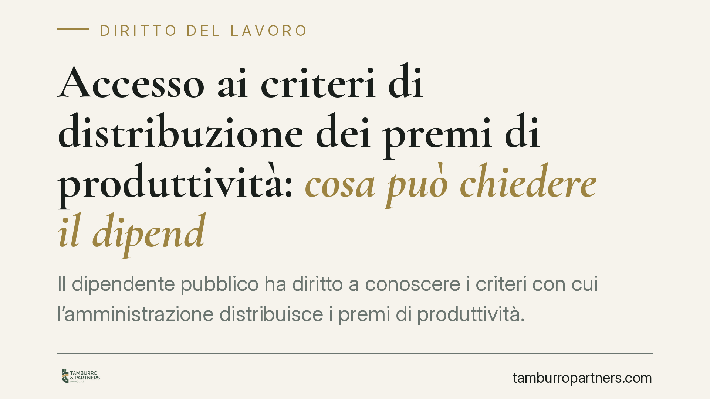

Accesso ai criteri di distribuzione dei premi di produttività: cosa può chiedere il dipendente pubblico
Il dipendente pubblico ha diritto a conoscere i criteri con cui l'amministrazione distribuisce i premi di produttività. Lo ha ribadito il TAR Veneto, imponendo l'ostensione integrale dei documenti, salvo l'oscuramento dei nominativi altrui. Una pronuncia che pesa sulla trasparenza retributiva nel pubblico impiego e sui limiti opponibili in nome della riservatezza.

Il caso
Un dipendente pubblico chiedeva all'amministrazione di appartenenza copia dei documenti relativi ai criteri di distribuzione dei premi di produttività. L'ente opponeva un diniego, invocando esigenze di riservatezza legate alla presenza di dati riferiti ad altri lavoratori.
Il TAR Veneto (sentenza in corso di pubblicazione al momento della redazione del presente contributo) ha accolto il ricorso, riconoscendo il diritto di accesso e imponendo l'ostensione integrale della documentazione, con il solo accorgimento dell'oscuramento dei nominativi dei terzi non necessari a soddisfare l'interesse del richiedente.
Inquadramento normativo
Il diritto di accesso documentale trova la sua disciplina generale negli artt. 22 e 24 della legge n. 241/1990. L'art. 22 riconosce l'accesso a chi vanti un interesse diretto, concreto e attuale, corrispondente a una situazione giuridicamente tutelata e collegata al documento richiesto. L'art. 24 individua i casi di esclusione, tra cui la tutela della riservatezza dei terzi.
Il punto delicato è il bilanciamento tra questi due interessi. La legge non consente all'amministrazione di negare in blocco l'accesso quando una parte del documento contiene dati riservati: impone piuttosto di individuare la misura meno invasiva. L'oscuramento parziale è, in questa logica, lo strumento proporzionato che concilia trasparenza e protezione dei dati personali.
Sul versante della riservatezza, il riferimento è al Regolamento UE 2016/679 (GDPR) e al D.Lgs. 196/2003, come modificato dal D.Lgs. 101/2018. Questi testi non conferiscono ai dati personali una protezione assoluta e opponibile a ogni richiesta di accesso: il trattamento per finalità di trasparenza e di esercizio di un diritto in sede amministrativa o giudiziaria è ammesso, purché limitato a quanto necessario.
Perché i criteri di distribuzione non sono dati riservati opponibili
Qui si colloca l'aspetto interpretativo più rilevante. Occorre distinguere due piani.
Da un lato ci sono i criteri generali con cui l'amministrazione ripartisce il fondo per la produttività: parametri, pesi, fasce di valutazione, metodo di calcolo. Si tratta di regole organizzative che governano la spesa pubblica e incidono direttamente sulla posizione economica di ciascun dipendente. Come tali sono pienamente ostensibili: non contengono, in sé, dati personali di terzi, ma la struttura decisionale dell'ente.
Dall'altro lato ci sono le valutazioni individuali riferite ai singoli lavoratori, con i relativi punteggi e importi nominativi. Questi elementi possono essere oscurati quando non servano a far valere l'interesse del richiedente.
La ratio è lineare: conoscere il metodo di distribuzione è condizione necessaria per verificare la correttezza dell'operato dell'amministrazione e, se del caso, contestarlo. Negare il metodo per proteggere i nomi altrui significa confondere due oggetti diversi. Il nome del collega è riservato; il criterio che stabilisce chi prende cosa e perché non lo è.
Implicazioni pratiche
Per il dipendente pubblico la pronuncia rafforza uno strumento concreto di controllo sulla retribuzione accessoria. Chi sospetta disparità di trattamento o applicazioni non uniformi dei criteri premiali può ottenere la documentazione che consente una valutazione informata.
Per l'amministrazione il diniego integrale è una scelta rischiosa. Di fronte a una richiesta legittima, la risposta corretta non è il rifiuto, ma l'ostensione con oscuramento mirato dei soli dati non pertinenti.
Cosa fare in concreto
- Presentare istanza di accesso scritta all'ufficio competente, indicando i documenti richiesti (criteri di distribuzione e atti di ripartizione del fondo) e l'interesse concreto e attuale che la sorregge, ai sensi dell'art. 22 L. 241/1990.
- Calcolare i termini della PA: l'amministrazione deve rispondere entro 30 giorni. Decorso tale termine senza risposta, si forma il silenzio-diniego ai sensi dell'art. 25, co. 4, L. 241/1990.
- In caso di diniego, espresso o tacito, valutare il ricorso al TAR entro 30 giorni, ai sensi dell'art. 116 del Codice del processo amministrativo (D.Lgs. 104/2010). Il termine decorre dalla conoscenza del provvedimento di diniego o dalla formazione del silenzio.
- Chiedere, in via subordinata, l'accesso parziale con oscuramento dei dati dei terzi: è la soluzione proporzionata che l'amministrazione è tenuta a preferire rispetto al rifiuto totale.
- Conservare data e forma di ricezione del diniego: la decorrenza dei termini di impugnazione dipende dalla prova della conoscenza dell'atto.
Disclaimer
Contributo informativo a cura di Tamburro & Partners Avvocati - Avv. Giuseppe Tamburro. Non costituisce parere legale.
Ogni storia di lavoro ha i suoi tempi.
Se gestisci HR e vuoi un confronto su contenzioso, ispezioni o licenziamenti, scrivi allo studio. Ti rispondiamo entro un giorno lavorativo.